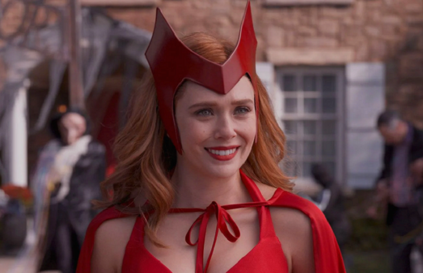

Lista de poderes
apresentados nos filmes!
Nascida bruxa e, posteriormente, com os poderes amplificados pela Jóia da Mente, eis aqui uma lista de poderes de Wanda Maximoff:
- Magia do Caos: Wanda é portadora de um dos (se não o) tipos mais perigosos de magia.
- Telecinese: Wanda consegue mover objetos com sua mente.
- Projeção Astral: Wanda consegue projetar sua forma astral para fora de seu corpo.
- Manipulação de Realidade: Wanda consegue manipular a realidade ao seu redor.
- Voo: Wanda tem a habilidade de voar.
- Telepatia:Wanda consegue ler mentes e se comunicar mentalmente.
- Manipulação Mental:Wanda consegue invadir a mente de seus oponentes e projetar ilusões.
entre outros...

Wanda comemorando Halloween.
Voltar